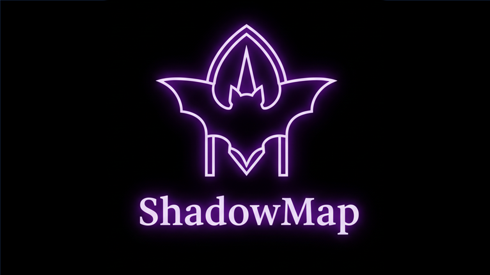

A professional spectral‑analysis platform designed for investigators, analysts, and explorers of anomalous phenomena. ShadowMap combines real‑time mapping, verified case files, and premium investigative tools in a single unified interface.

Track spectral anomalies, manifestations, and verified haunted locations with precision.
Access detailed dossiers, clearance levels, and historical observation logs.
Unlock restricted archives, classified routes, and deep‑analysis reports.